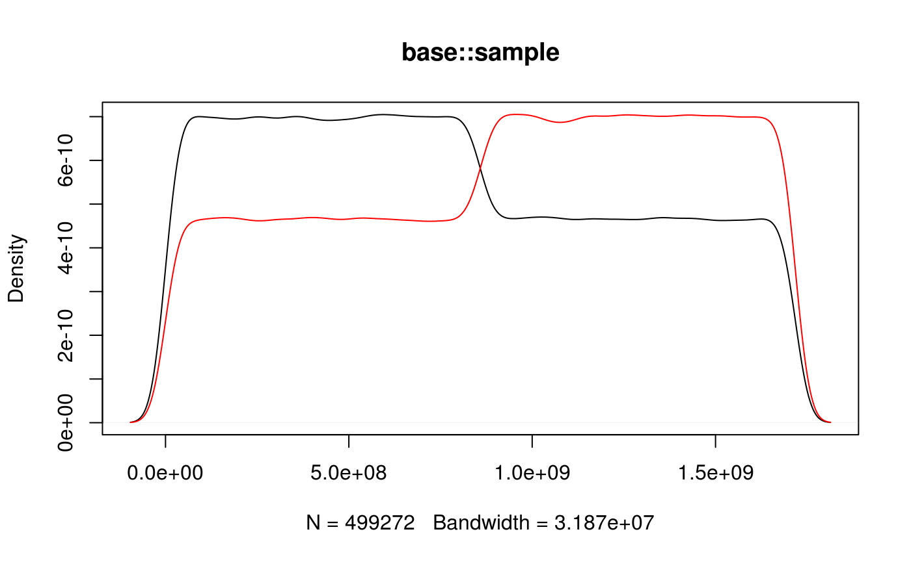
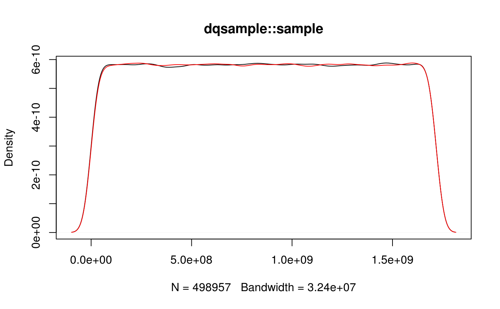

The base::sample function uses a slightly biased algorithm for creating random integers within a given range. As an alternative the algorithm suggested by Daniel Lemire (2018, <arXiv:1805.1094>) is used. The package is motivated by a thread on R-devel.
Installation
At the moment dqsample is not on CRAN, but you can install the current version via drat:
Example
When sampling many random integers the density of odd and even numbers should be roughly equal and constant. This is not the case with base::sample:
m <- 2/5 * 2^32
x <- base::sample(floor(m), 1000000, replace = TRUE)
plot(density(x[x %% 2 == 0]), main = "base::sample")
lines(density(x[x %% 2 == 1]), col = 2)
While it is the case with dqsample::sample:
m <- 2/5 * 2^32
x <- dqsample::sample(floor(m), 1000000, replace = TRUE)
plot(density(x[x %% 2 == 0]), main = "dqsample::sample")
lines(density(x[x %% 2 == 1]), col = 2)
This particular sample for the bias was found by Duncan Murdoch.